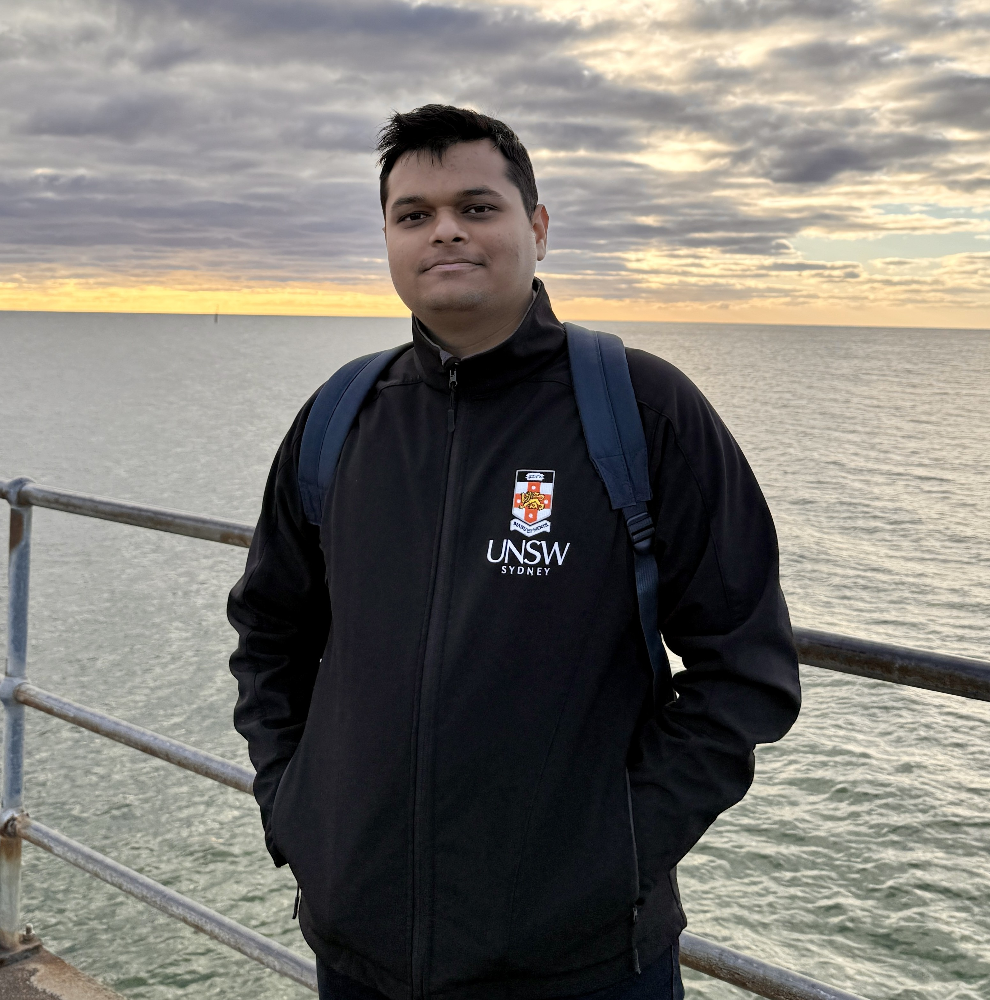

Final-year Electrical Engineering (Honours) student at UNSW. Passionate about driving the transition to sustainable energy through robust expertise in high-voltage infrastructure, renewable systems, microgrids, and professional design/estimation.
Connect on LinkedInDuring my tenure, I focused on technical accuracy and standard compliance for commercial low-voltage power distribution projects.
Eden Residential: MSB/DB estimation (Eden NSW)
Surfers Paradise Residences: All DB data (Surfers Paradise QLD)
Yorktown Development: Meter panels/DB pricing (Maroubra NSW)
National Storage Hornsby: Switchboard schematic & DB (Asquith NSW)
DASLEC Industrial: 1600A, IP66 Green MSB (Smithfield NSW)
Railway Parade: Kogarah residential MSB/meter panels (Kogarah NSW)
Opal Jordan Springs: HealthCare MSB and DB design (Jordan Springs NSW)
Samaritan House: Surry Hill DB & MSB Refurbishment (Surry Hills NSW)
Deepening understanding of large-scale power generation, transmission, and industrial distribution through active internships at significant plant sites.
Gained critical plant-level exposure to large-scale high-voltage power generation and distribution.
Explored the technical complexities of an industrial facility with its own localized power network.
Demonstrating technical depth, hardware-software integration, and innovation through major engineering design challenges.
Investigating advanced Solid-State Transformer (SST) topologies for the efficient, compact integration of renewable energy sources and battery storage into localized DC microgrids and conventional AC grids.
Developing comprehensive models in MATLAB/Simulink encompassing PV arrays, battery storage, and multi-stage power electronic converters to analyze power flow, dynamic performance, and harmonic filtering.
Designing dynamic control strategies for precise power management between the PV system, battery bank, and grid connections, including battery charge/discharge controllers and high-performance DC/AC inverters.
Future Implementation Phase: Progressing toward detailed hardware design of the medium-frequency transformer and implementation of physical AC and DC grid integration.